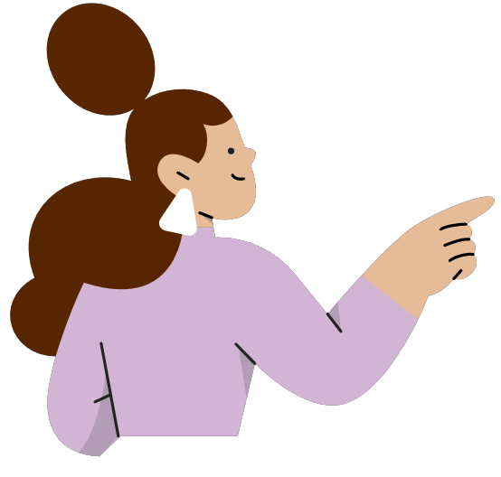

<ion-header [translucent]="true">
  <ion-toolbar>
    <ion-buttons slot="primary">
      <ion-button id="popover-button">
        <ion-icon slot="icon-only" name="person-circle"></ion-icon>
      </ion-button>
    </ion-buttons>
    <ion-title>DuocUC Registrapp</ion-title>
  </ion-toolbar>
</ion-header>
<ion-content class="ion-padding">

  <ion-popover trigger="popover-button" [dismissOnSelect]="true">
    <ng-template>
      <ion-content>
        <ion-list lines="none">
          <ion-item [button]="true" [detail]="false">Perfil</ion-item>
          <ion-item [button]="true" [detail]="false" (click)="logout()">Cerrar sesión</ion-item>

        </ion-list>
      </ion-content>
    </ng-template>
  </ion-popover>

  <ng-template #cargando>
    <ion-progress-bar type="indeterminate"></ion-progress-bar>
  </ng-template>

  <ng-template #datos>
    <ng-template #profesor>
      <app-profesor-home></app-profesor-home>
    </ng-template>

    <ng-template #alumnos>

      <ion-card>
        <ion-card-content>
          <ion-item lines="none">
            <ion-avatar slot="start">
              
            </ion-avatar>
            <ion-label>
              <h3>{{userLogged.nombre}}&nbsp;{{userLogged.apellidoPat}}</h3>
              <p>{{userLogged.email}}</p>
              <p>{{userLogged.carrera}}</p>

            </ion-label>
          </ion-item>
        </ion-card-content>
      </ion-card>

      <ion-card class="ion-text-center">
        <ion-grid>
          <ion-row>

            <ion-col>
              
            </ion-col>
            <ion-col>
              <ion-card-content>
                Puedes ingresar a tus asignaturas en cualquier momento y visualizar el avance de asistencia.
                <br>

              </ion-card-content>
            </ion-col>
          </ion-row>
          <ion-row>
            <ion-col>
              <ion-button expand="block" shape="round" color="tertiary" [routerLink]="['/missecciones']">Mis
                secciones<ion-icon slot="end" name="list"></ion-icon></ion-button>

            </ion-col>
          </ion-row>
        </ion-grid>
      </ion-card>

    </ng-template>

    <p *ngIf="rol=='Profesor'; then profesor else alumnos"></p>

  </ng-template>

  <p *ngIf="rol; then datos else cargando"></p>


</ion-content>